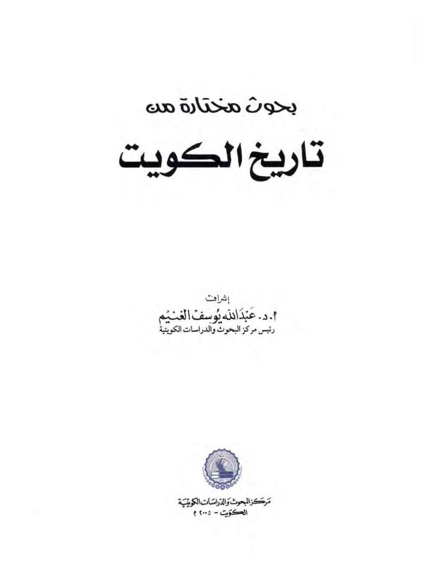
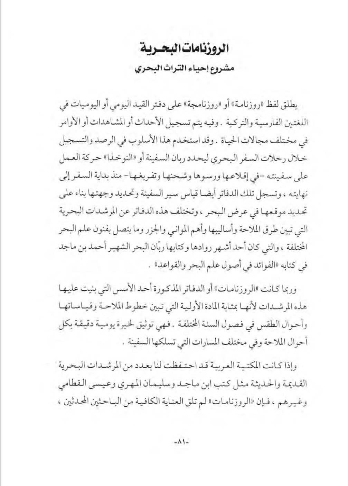

1939 to 1995, published 2005 · Book pages, Buhuth Mukhtara min Tarikh Al-Kuwait, supervised by Prof. Abdullah Yousef Al-Ghunaim, Center for Research and Kuwaiti Studies, Kuwait, 2005
Buhuth Mukhtara min Tarikh Al-Kuwait: the sea logs, Eissa Al-Qatami, and Nakhuda Naser Abdulwahab Al-Qatami
What it is
1. The chapter «Al-Roznamat Al-Bahriya» names Eissa Al-Qatami with Ibn Majid and Sulaiman Al-Mahri among the authors of Arab sailing guides (page 81). 2. It reprints, more fully than Risalat Al-Kuwait 2003, the account of Nakhuda Naser Abdulwahab Al-Qatami’s rozname: 244 pages, thirteen voyages, his photograph and a page in his hand. His first voyage in command was on the boom «Suhail» of Ahmed Mohammed Al-Ghanim on 22 October 1939 and his last on 20 December 1951; he died on 23 March 1995 aged 76. His grandfather Abdulaziz, his father Abdulwahab and his brothers Bader and Yousef were nakhudas; he trained under his father and Bader on the baghla «Al-Badri», sold her in Aden and bought a boom he named «Boom Al-Badri», after the baghla called «the sailing school of the sons of Abdulwahab Al-Qatami» (pages 83 to 85). 3. The bibliography lists his rozname, edited by Dr Yacoub Yousef Al-Hijji, 2002 (page 156).
Why it matters
Completes the Risalat Al-Kuwait 2003 article on Naser’s sea log, including the pages that were missing.
Page copies


Notes
Only the first pages are shown here. Family members who sign in can see all 7 pages.
Sources
Buhuth Mukhtara min Tarikh Al-Kuwait, supervised by Prof. Abdullah Yousef Al-Ghunaim, Center for Research and Kuwaiti Studies, 2005, pages 81 to 85 and 156
How this text was made: Page copies of a published book.
Open in the interactive site